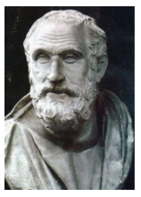

Capítulo 5: Estudo a respeito do desenvolvimento científico e da busca de alternativas para um mundo sustentável.
O desenvolvimento da ciência passou por diversas fases ao longo do tempo, tendo adquirido um desenvolvimento jamais visto nas últimas décadas. Hoje somos capazes de desenvolver os mais sofisticados aparelhos que irão produzir em todos os setores da economia, desde os microchips dos aparelhos telefônicos e computadores até as grandes máquinas que perfuram as rochas abrindo caminho entre as montanhas, encurtando a distância entre os locais. Por outro lado, também podemos observar ao olharmos para o passado, momentos em que a ciência foi obstruída por pessoas e instituições que visavam reter o conhecimento em nome das suas próprias verdades. Noutros casos o conhecimento científico foi utilizado de maneira obscura e danosa a sociedade, como é o caso das guerras. E na atualidade, como você percebe o desenvolvimento da ciência? Existem prós e contras?
Contextualizando – Indústria Química e Medicamentos
A descoberta da penicilina
No ano de 1928, o cientista Alexander Fleming, na época com 47 anos, ao voltar de férias, percebeu ter esquecido algumas placas com culturas de fungos da espécie Staphylococcus aureus, que vinha estudando, sobre a bancada de seu laboratório no hospital St. Mary’s, em Londres. O material estava exposto e contaminado de mofo. Antes que ele pudesse descartar o material, Flemming observou que as bactérias no interior da placa haviam morrido. O médico concluiu que a ação do mofo, oriundo do fungo Penicillium, destruía as bactérias.Intrigado, Flemming passou a estudar aquele fenômeno. Desta forma, isolou o fungo em outras placas e descobriu que ele sintetizava uma substância com ação bactericida.De início, a descoberta de Fleming, anunciada em 15 de setembro de 1928, não causou empolgação no meio científico, que estava saturado de pesquisas similares, para descobrir algo que combatesse a ação nociva das bactérias. Os médicos Ernst B. Chain e Howard W. Florey, também ingleses, passaram a estudar a penicilina de Flemming, e a isolaram verdadeiramente naquele ano. A substância recebeu grande incentivo financeiro e foi testada em 80 tipos de bactérias, provando sua eficácia contra os micróbios e inatividade em relação aos glóbulos brancos. A descoberta de Alexander Flemming permitiu que uma grande indústria dedicada à produção de penicilina, além de outros antibióticos, surgisse, dando a possibilidade de uma vida de qualidade para pessoas que sofriam de infecções como tuberculose, pneumonia, meningite, sífilis, entre outras infecções, para as quais não havia tratamento antes do seu estudo.
http://opiniaoenoticia.com.br/internacional/descoberta-da-penicilina/
O desenvolvimento da ciência é algo que acompanha a humanidade desde os primórdios da civilização. Antes mesmo do desenvolvimento das estruturas complexas que formaram os primeiros Estados da antiguidade, o homem já se utilizava de arranjos tecnológicos para garantir a sua subsistência e a do grupo ao qual pertencia. Os artefatos utilizados nas caçadas ou mesmo na coleta de frutas no alto das arvores podem ser considerados importantes utensílios que o auxiliaram na subsistência e na transformação da natureza.
Ao longo dos séculos as descobertas científicas proporcionaram novos entendimentos a respeito do mundo, bem como trouxeram uma melhora significativa das condições da vida humana sobre a terra. A Europa moderna foi o berço de grandes descobertas da ciência capazes de mudar por completo as estruturas de pensamento do período. As grandes navegações empreendidas pelos navegadores europeus só foram possíveis em virtude do desenvolvimento de novas técnicas de navegação e da construção de navios capazes de tamanho desafio.
Assim como as viagens da modernidade possibilitaram um acréscimo significativo no conhecimento científico do período, as viagens empreendidas pelo homem ao espaço também só foram possíveis mediante uma serie de conhecimentos que foram mobilizados para tal. Por outro lado, a ida do homem ao espaço abriu caminho para o desenvolvimento de novas pesquisas que tiveram seus resultados difundidos por vários setores da economia, até que se difundissem no cotidiano das pessoas.
A penicilina descoberta por Fleming no ano de 1928 revolucionou o tratamento dispensados aos enfermos do período, possibilitando a cura ou a melhora nas condições de vida de milhares de pessoas. Hoje ela é amplamente conhecida, fazendo parte das nossas vidas como se sempre tivesse existido, mas na realidade trata-se de uma descoberta recente se pensarmos no longo processo de desenvolvimento da espécie humana.
Reconstruindo conhecimentos
No oriente antigo temos o berço do desenvolvimento de diversos ramos da ciência. Os povos da mesopotâmia tinham amplos conhecimentos matemáticos, além de desenvolverem estudos sobre astrologia. No Egito, além da astronomia e da matemática, foram feitos avanços significativos no campo da medicina e da farmacologia.
Na índia os estudos de astrologia e matemática também se desenvolveram com bastante destaque e na China o desenvolvimento de diversos ramos do conhecimento foi possível através do trabalho desenvolvido por cientistas de grande prestígio na época em que viveram. Entre estes grandes nomes destaca-se o de ShenKuo que século XI foi o primeiro homem a descrever a bússola de agulha magnetizada usada para a navegação.
No mundo greco-romano, a evolução do pensamento em busca de elementos com base científica na comprovação dos fatos da natureza fez dos filósofos gregos referência no pensamento ocidental. Nomes como os de Arquimedes na Matemática, Astronomia e Engenharia, de Euclides na Matemática, e de Hipócrates na medicina, são exemplos da grandiosidade dos gregos antigos.
Quem é?
 Hipócrates é conhecido por muitas pessoas como uma das figuras mais marcantes da história da saúde. Devido a sua grande importância, ele é chamado de "Pai da Medicina". Este importante estudioso da medicina nasceu na Grécia e fazia parte de uma família que mantinha uma longa tradição na pratica de cuidados em saúde. Em seus estudos, ele pôde constatar a relação de muitas epidemias com fatores climáticos, raciais, alimentares e do meio ambiente. Deixou ainda muitas descrições clínicas que possibilitam o diagnóstico de doenças como a malária, tuberculose, caxumba e pneumonia. Ele se dedicou também profundamente aos estudos sobre anatomia humana, deixando anotações descritivas bastante claras que se referiam não só a instrumentos de dissecação, como também, a procedimentos práticos. O “pai da medicina” direcionava seus conhecimentos em saúde no caminho científico, ele rejeitava completamente a superstição e práticas que não se podia explicar cientificamente. http://www.todabiologia.com/pesquisadores/hipocrates.htm
Em Roma não houve grandes avanços se considerados aqueles alcançados no mundo grego. Muito da ciência romano foi na verdade um desdobramento do que já havia sido primeiramente desenvolvido na Grécia. Talvez o ramo da ciência que melhor traduza a genialidade dos romanos seja a ciência jurídica que chegou ao seu apogeu com o código de Justiniano no ano de 535 d. C.
Durante a Idade média o desenvolvimento científico também passou por uma série de restrições, mas ao contrário do que se acreditava até bem pouco tempo, aconteceram avanços em diversos setores da economia graças ao emprego da tecnologia desenvolvida pelos homens de ciência.
Especialmente a partir do desenvolvimento das universidades, e do paulatino questionamento de alguns dos principais dogmas da fé católica, é que o conhecimento científico europeu alcançou um patamar elevado de desenvolvimento. Muitos dos primeiros homens de ciências foram religiosos como é o caso de Roger Bacon, um frade franciscano responsável por estudos em diversos campos como a alquimia, a astronomia e a óptica.
No mundo islâmico a assimilação de muitos dos estudos inicialmente realizados pelos gregos criaram os alicerces de uma ciência independente que se consolidou ao longo dos anos. Estudos sobre medicina, ótica, artefatos náuticos e matemática são alguns dos ramos da ciência desenvolvida pelo mundo islâmico durante a Idade Média. O próprio livro sagrado, o Alcorão, faz menção a ciência, em especial a medicina, considerada uma extensão da arte da criação divina.
No período renascentista, por conta da ruptura progressiva com o teocentrismo típico do medievo, e a introdução do antropocentrismo que caracterizou o pensamento dos intelectuais da época, houve um significativo aumento no desenvolvimento da ciência. Contudo, ainda no século XVI houveram perseguições aqueles que ousaram discordar dos fundamentos que embasavam o pensamento cristão difundido pelos intelectuais da igreja católica.
Um destes nomes foi o do filósofo, teólogo e frade dominicano Giordano Bruno que foi condenado a morte na fogueira pelo tribunal da Inquisição no ano de 1600. Bruno foi acusado de heresia por discordar da igreja no que se refere a transubstanciação do pão em carne e do vinho em sangue, considerado por ele como sendo uma fraude, pela formação do universo, e que a terra não era o centro deste, posto considera-lo infinito e ilimitado segundo a própria essência de Deus, além de defender a possibilidade de vidas inteligentes como a nossa noutros mundos dentre os vários possíveis de serem habitados.
Outro nome de peso que sofreu com perseguições impostas pela Igreja Católico foi o de Galileu Galilei, físico, matemático, astrônomo e filósofo italiano que, antes de lhe ser dado o mesmo destino de Giordano Bruno, renunciou a eficácia das suas ideias a respeito do heliocentrismo, modelo em que a Terra gira ao redor do Sol, portanto, oposto ao geocentrismo apregoado pelos intelectuais da Igreja, que dizia que o Sol girava ao redor da Terra. No ano de 1992, o papa João Paulo II reconheceu os abusos cometidos em relação a sua prisão e concedeu-lhe a absolvição póstuma. Devido as suas pesquisas, Galileu é considerado o pai da ciência moderna.
Hoje em dia o desenvolvimento da ciência é considerado de extrema importância na resolução de uma série de problemas enfrentados pela humanidade. Se tomarmos, por exemplo, o desenvolvimento da indústria de alimentos, veremos que o desenvolvimento de novas tecnologias capazes de aumentar a produção de grãos é fundamental para a economia mundial. Porém, existem controvérsias a respeito de pesquisas que envolvem a manipulações genéticas.
Os embates em torno das sementes transgênicas sacudiram a opinião pública mundial no início dos anos 2000. Os transgênicos são alimentos geneticamente modificados no intuito de melhorar as características das plantas, evitando o ataque de pragas e reduzindo o uso de agrotóxicos. Por outro lado, acredita-se que a liberação de plantas transgênicas no meio ambiente causaria um desequilíbrio na natureza, além de causarem danos a saúde humana. Desde o ano de 2003 os alimentos transgênicos são comercializados normalmente no Brasil, são óleos, farinhas, feijão, milho, entre outros.
Outra controvérsia da ciência foi a clonagem de uma ovelha feita no ano de 1996 por cientistas escoceses. Trata-se da ovelha Dolly, clonada a partir das células da glândula mamária de uma ovelha adulta. Mas para que serviria este tipo de pesquisa científica? As pesquisas desenvolvidas em torno da clonagem caminham na direção do que chamamos de clonagem terapêutica, com emprego específico na formação de células saudáveis que servem na substituição de células ou tecidos doentes, proporcionando uma chance de cura para pessoas com problemas genéticos ou que sofreram lesões graves como por exemplo, as causadas na coluna vertebral.
Outros tipos de pesquisa científica não causam tantas controvérsias. É o caso do desenvolvimento das próteses utilizadas para substituir um ou mais membros ou órgãos humanos. O tema das próteses sempre foi algo perseguido pela ciência, especialmente nos períodos em que as guerras mutilavam muitos dos combatentes. Porém jamais havia se chegado ao nível de desenvolvimento que se tem hoje em relação a estes aparelhos que chegam a simular o movimento natural do corpo através de pulsos elétricos.
Ação e reflexão
http://www.fatosdesconhecidos.com.br/tudo-o-que-ninguem-sabia-sobre-a-vida-de-stephen-hawking-materia-especial/
O Físico inglês Stephen Hawking sofre desde a juventude de uma doença degenerativa e sem cura chamada esclerose lateral amiotrófica que paralisa os músculos do corpo, mas não atinge as funções cerebrais.
Suas teorias relativas aos buracos negros, o Big Bang e a formação do tempo e do universo são mundialmente conhecidas e também contestadas por muitos outros pesquisadores. Seus livros foram traduzidos para mais de trinta idiomas e ele fez palestras por todos os continentes.
O trabalho desenvolvido por outros cientistas no intuito de fazer com que Hawking tenha condições de seguir sua vida pessoal e profissional pode ser visto no aparato tecnológico disposto na cadeira de rodas que ele utiliza. Após uma traqueostomia sua voz ficou prejudicada, passando a ser traduzida de forma computadorizada. Ele perdeu o movimento do rosto, o que dificulta ainda mais a sua comunicação. A ideia dos pesquisadores é fazer com que as suas ondas cerebrais sejam de alguma forma traduzidas em palavras.
Faça uma pesquisa a respeito de quais são os locais na sua cidade ou no Estado em que você vive, onde se desenvolvem pesquisas científicas. Aponte quais são as principais pesquisas nestes locais e como elas contribuem com a sociedade. Pense numa área do conhecimento que você tem interesse em conhecer mais e procure descobrir que tipos de pesquisa estão sendo realizadas nesta área na atualidade.
O que aprendi
Neste capítulo você aprendeu que o desenvolvimento da ciência aconteceu em várias épocas e locais diferentes, estando sempre relacionado a necessidade humana em melhor fazer a reprodução da vida material, garantindo a sobrevivência da espécie. Porém, em muitos casos existiram grupos e instituições interessadas em deter a difusão e o avanço da ciência, criando leis e restrições que intimidavam e restringiam o trabalho dos cientistas.
Europa moderna foi o berço de grandes descobertas da ciência, momento em que as fronteiras do mundo conhecido ampliaram-se devido aa grandes navegações que garantiram a ocupação da América.
Se recuarmos no tempo, veremos que desde a antiguidade houveram grandes avanços em áreas como a matemática e a astronomia. Já no medievo, o desenvolvimento das universidades ajudou a romper as barreiras impostas pelos dogmas da fé católica, que impunha a sua visão de mundo sobre a sociedade europeia. Já no mundo islâmico, o estudo dos clássicos gregos ajudou no desenvolvimento científico.
No período renascentista várias rupturas ocorreram em relação a forma de conceber o mundo típica da Idade Média. Intelectuais como Giordano Bruno e Galileu Galilei foram perseguidos e mortos por discordarem dos preceitos religiosos a respeito dos elementos do homem e da natureza.
Hoje em dia são vários os campos de desenvolvimento da ciência. Estudos sobre a produção de alimentos geneticamente modificados, a clonagem de células humanas para fins terapêuticos e o desenvolvimento de próteses com tecnologia de última geração, são alguns dos exemplos de pesquisas desenvolvidas e que criam grandes expectativas em relação ao futuro da humanidade.